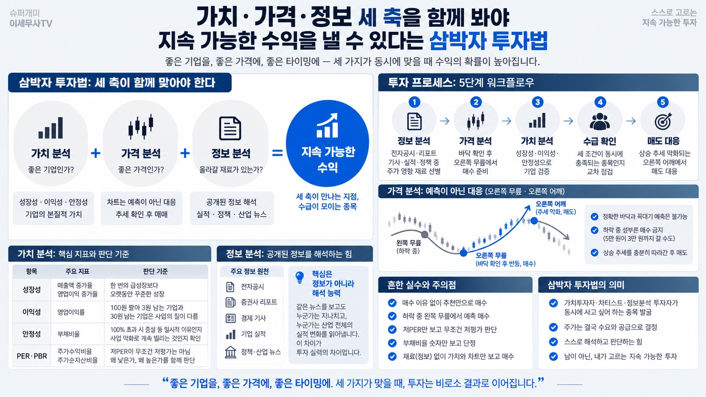

슈퍼개미 이세무사TVMORNING DIGEST · 2026-09-07 · 슈퍼개미 이세무사TV🎬 영상
가치·가격·정보 세 축을 함께 봐야 지속 가능한 수익을 낼 수 있다는 삼박자 투자법
슈퍼개미 이세무사TV가 전하는, 소액 투자자도 스스로 종목을 고를 수 있게 하는 3요소 투자 프레임워크

01핵심 개요
좋은 투자는 가치 분석·가격 분석·정보 분석 세 가지가 동시에 맞아야 성립한다.
가치만 좋고 비싸게 사면 수익이 어렵고, 차트만 좋고 회사가 부실하면 큰 위험을 맞는다.
재료(정보) 없이 가치와 차트만 좋으면 주가가 오랫동안 안 움직일 수 있다.
"무릎에서 사서 어깨에 팔아라"의 무릎은 바닥 확인 후 오르기 시작한 오른쪽 무릎을 뜻한다.
부채비율 100% 초과 시 숫자만 보지 말고 증설 때문인지 사업 악화 때문인지 확인해야 한다.
02핵심 주장 / 논점 구조
주식 투자를 음식점에 비유: 가게 경쟁력=가치 분석, 사는 가격과 흐름=가격 분석, 손님을 끌 재료=정보 분석.
손님 많고 맛있어도 권리금이 주변 대비 5배면 사면 안 되듯, 좋은 기업도 아무 가격에나 사면 안 된다.
가격이 싸도 손님이 없는 가게처럼, 저평가라는 이유만으로 매수하면 안 된다.
맛·가격이 적당해도 사람들이 골목 자체를 모르면 손님이 들어오기까지 오래 걸리듯, 재료 없는 종목은 오래 정체된다.
세 가지 분석은 결국 수급에서 만난다: 가치투자자·차티스트·정보분석 투자자가 동시에 사려는 종목일수록 상승 확률이 높아진다.
03정보 분석: 공개된 정보를 해석하는 힘
초보 투자자는 대부분 "이거 진짜 좋은 종목이래", "조만간 큰 뉴스 나올 거야" 같은 추천으로 매수를 시작한다.
문제는 왜 샀는지, 언제 팔아야 하는지를 모른다는 점이다. 만 원에 사서 15,000원까지 오르면 기분 좋지만, 다시 만 원, 8,000원, 7,000원으로 떨어지면 "본전 오면 팔아야지"라는 생각에 빠진다.
이런 문제는 매수 이유가 없기 때문에 생긴다.
중요한 정보는 남들이 모르는 비밀 정보가 아니라 전자공시, 증권사 리포트, 경제 기사, 기업 실적, 정책·산업 뉴스 등 누구나 볼 수 있는 공개 정보다.
문제는 정보가 없어서가 아니라 정보가 너무 넘쳐나서, 어떤 정보가 주가에 영향을 주는지 판단하는 능력이 중요하다. 같은 뉴스를 보고도 어떤 투자자는 지나치고 어떤 투자자는 "이 뉴스가 산업 전체의 실적을 바꿀 수도 있겠는데"라고 판단하며, 이 차이가 쌓여 투자 실력 차이가 된다.
04가격 분석: 예측이 아니라 대응이다
핵심 원칙은 "차트는 예측이 아니라 대응"이다. 정확한 바닥과 꼭대기를 맞히는 방법은 없다.
10만 원이 8만 원, 6만 원, 5만 원까지 내려오면 "많이 빠졌으니 이제 싸지 않을까"라는 생각이 들지만, 5만 원이 3만 원까지 갈 수도 있다.
격언 "무릎에서 사서 어깨에 팔아라"에서 무릎은 하락 중인 왼쪽 무릎이 아니라, 바닥을 확인하고 다시 올라오기 시작한 오른쪽 무릎을 뜻한다.
매도도 동일하다. "여기가 꼭대기 아닐까" 하며 너무 빨리 팔지 말고, 상승 추세를 충분히 따라가 고점을 만든 뒤 추세가 약해지는 오른쪽 어깨에서 대응한다.
즉 바닥을 예측하지 말고 확인한 뒤 대응하고, 천장을 예측하지 말고 확인된 뒤 대응하는 것이 가격 분석의 핵심이다.
05가치 분석: 안전벨트이자 수익의 도구
세 요소 중 하나만 고르라면 가치 분석이 가장 중요하다. 정보·차트 분석이 좋아도 기업 자체가 부실하면 유상증자, 유상감자, 관리종목, 심하면 상장폐지까지 갈 수 있기 때문이다.
가치 분석은 수익을 내는 도구이기 전에 시장에서 살아남기 위한 안전벨트다.
항목
봐야 할 지표
판단 기준
성장성
매출액 증가율, 영업이익 증가율
한 번 크게 성장한 회사보다 오랫동안 꾸준히 성장하는 회사가 좋다
이익성
영업이익률
100원 팔아 3원 남는 기업과 30원 남는 기업은 사업의 질이 다르다
안정성
부채비율
100% 초과 시 증설 등 일시적 이유인지, 사업 악화로 계속 빌리는 것인지 확인
PER·PBR은 가장 많이 보는 지표지만, 저PER이 무조건 저평가는 아니다. 미래 이익이 줄어들 것으로 예상돼 PER이 낮을 수도 있고, 빠르게 성장하는 회사는 미래 이익을 먼저 반영해 높은 PER을 받을 수도 있다. 따라서 "왜 PER이 낮은가, 왜 높은가"를 함께 봐야 한다.
06전략적 의미
삼박자 투자법의 궁극적 목적은 서로 다른 유형의 투자자(가치투자자·차티스트·정보분석 투자자)가 동시에 사고 싶어 하는 종목을 찾는 것이다.
주가는 결국 수요와 공급으로 결정되므로, 세 부류가 동시에 매수할 이유가 생기면 상승 확률이 크게 높아진다.
남이 알려주는 종목만 따라가면 그 사람에게 계속 의존해야 하지만, 기업·차트·정보를 스스로 해석할 수 있으면 누가 알려주지 않아도 좋은 기업을 찾을 수 있다.
이것이 강사가 말하는 "지속 가능한 투자"의 조건이다.
07핵심 워크플로우: 삼박자 투자법 적용 단계
정보 분석: 전자공시·증권사 리포트·경제 기사·실적·정책 뉴스 중 주가에 영향을 줄 재료를 선별한다.
가격 분석: 하락 추세가 바닥을 확인하고 반등하는 오른쪽 무릎 구간을 확인한다.
가치 분석: 매출액·영업이익 증가율, 영업이익률, 부채비율을 확인해 기업이 안전한지 검증한다.
수급 확인: 가치·가격·정보 세 조건이 동시에 충족되는 종목인지 교차 점검한다.
대응: 상승 추세가 약해지는 오른쪽 어깨 구간에서 매도로 대응한다.
08활용 시나리오
초보 투자자가 추천만 믿고 매수했다가 매수 이유를 몰라 손실 구간에서 우왕좌왕하는 상황을 피하고 싶을 때, 정보 분석 습관부터 들이는 것이 첫걸음이 된다.
종목이 급락한 뒤 "많이 빠졌으니 싸겠지"라고 성급히 매수하려는 순간, 오른쪽 무릎(바닥 확인 후 반등)을 기다리는 원칙을 적용할 수 있다.
저PER 종목을 무조건 저평가로 판단하기 전에, 이익 감소 우려 때문인지 실제 저평가인지를 확인하는 데 활용한다.
한두 종목에 집중 투자하기 전, 부채비율과 이익성 점검으로 상장폐지 등 치명적 리스크를 사전에 걸러낼 수 있다.
09흔한 실수와 주의점
매수 이유 없이 추천만으로 매수해 하락 시 "본전 오면 팔아야지" 심리에 빠지는 것.
하락 중인 왼쪽 무릎에서 "바닥이겠지"라며 예측 매수하는 것 — 5만 원이 3만 원까지 갈 수도 있다.
저PER만 보고 무조건 저평가·좋은 종목이라 판단하는 것.
부채비율 숫자 하나만 보고 위험 여부를 단정하는 것 — 증설 등 이유를 확인하지 않는 것.
재료(정보) 없이 가치와 차트만 보고 매수해 오랫동안 주가가 움직이지 않는 종목을 보유하는 것.
10현황 및 전망
강사는 요즘 같은 장이 "공부하기에 딱 좋은 시기"라며 주말마다 학습 콘텐츠를 제작하고 있다고 밝혔다.
삼박자 투자법을 체계적으로 훈련하고 싶은 시청자를 위해 5주 과정의 "시니어 주식 스쿨"을 운영 중이며, 우사양고 연구이사와 공동 멘토로 참여해 밀착 소규모 스터디 형태로 진행한다.
5주 과정에는 ATTS 활용법, 시장을 읽는 법, 주도주 선정법, 매매 원칙과 계좌 관리가 포함되며 강의가 아닌 과외식 지도를 표방한다.
11용어 사전
삼박자 투자법: 가치 분석·가격 분석·정보 분석 세 가지를 동시에 확인해 종목을 선정하는 투자 프레임워크.
가치 분석: 매출액·영업이익 증가율, 영업이익률, 부채비율 등 기업의 성장성·이익성·안정성을 평가하는 것.
가격 분석: 차트를 통해 추세를 확인하고 대응하는 것으로, 예측이 아니라 확인 후 대응이 핵심이다.
정보 분석: 전자공시, 증권사 리포트, 경제 기사, 실적, 정책·산업 뉴스 등 공개 정보의 영향력을 판단하는 것.
오른쪽 무릎/오른쪽 어깨: 바닥을 확인하고 반등을 시작한 구간(매수 시점), 고점을 만들고 추세가 약해지는 구간(매도 시점).
PER/PBR: 주가수익비율/주가순자산비율. 낮다고 무조건 저평가를 의미하지 않으며 미래 성장성 반영 여부를 함께 봐야 한다.